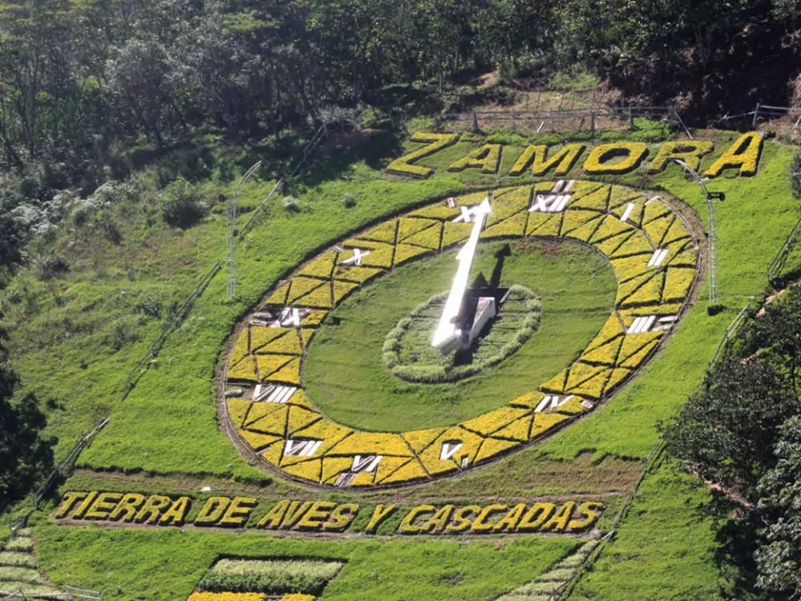

Ubicación:Zamora se encuentra en el extremo suroriental del Ecuador, dentro de la región
amazónica, y es conocida como “la puerta de entrada a la Amazonía ecuatoriana”.
Esta ubicación estratégica la convierte en un punto de transición entre la Sierra y la
Selva, ya que colinda con la provincia de Loja al oeste. Su posición geográfica le otorga
una gran importancia tanto a nivel ecológico como cultural, ya que en esta zona se
mezclan características andinas y amazónicas, lo que enriquece su paisaje, biodiversidad y
tradiciones.
Provincia:La ciudad de Zamora es la capital de la provincia de Zamora Chinchipe, una de las
provincias más biodiversas del país. Esta región se destaca por sus extensas áreas
de selva tropical, una gran riqueza en recursos minerales como el oro, y la presencia de
comunidades indígenas ancestrales como los Shuar, reconocidos por su conocimiento
de la selva y sus costumbres únicas, y los Saraguros, que han migrado desde la Sierra y
mantienen vivas sus tradiciones andinas. La interacción de estas culturas ha moldeado
la identidad pluricultural de la provincia.

Ríos principales:El entorno geográfico de Zamora está dominado por una red de ríos caudalosos,
siendo los principales el río Zamora, el Bombuscaro y el Jamboé. Estos cuerpos de agua
cumplen un papel fundamental en la vida económica y social de la región: permiten la
irrigación de cultivos, abastecen de agua a las comunidades, son fuente de pesca y
atraen turistas por su belleza natural. Además, sus cuencas están rodeadas de una
exuberante vegetación y son hábitat de numerosas especies animales, lo que los
convierte en espacios clave para la conservación ambiental.
Clima:Zamora posee un clima cálido-húmedo característico de la Amazonía. Las
temperaturas oscilan entre los 18 y 26 grados centígrados durante todo el año, y las
lluvias son frecuentes, con precipitaciones abundantes que nutren la selva y mantienen su
verdor constante. Este clima favorece el crecimiento de una densa vegetación tropical y la
existencia de una fauna muy diversa. Las condiciones climáticas también influyen en las
prácticas agrícolas locales, donde se cultivan productos como yuca, plátano, cacao, y
café amazónico.
| sitio geografico de zamora | |
|---|---|
| ubicacion | region amazonica del Ecuador sureste del pais |
| provincia | zamora chinchipe |
| clima | calido-humedo |
| rios principales | zamora,bombuscaro,jambeo |